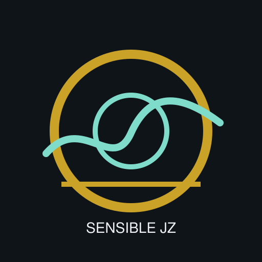

可感京张 · 感知基线带
一、总体空间结构 · 总览地图与三层范围Site Overview / Three Scopes
规划以京张铁路遗址公园绿脊为感知主脊（约 9.3 公里），串联大钟寺、AI 原点社区、众智园三处重点区域，沿主脊每 300-500 米设置感知断面共 18 处，并叠加机器人低速共享通道约 18.8 公里与驿站 3 处，形成「一脊、三区、十八断面、机器人友好慢行层」。

图 01 总体空间结构（正北向右；provisional）
概念效果图廊Concept Renders
九张写实+暖宣纸调效果图用于政企沟通与设计表达，统一标注“概念效果图，非实景”。风格参照线性公园竞赛板（鸟瞰总览 + 人视体验 + 断面分层）。


二、用地布局 · 用地分区与建筑Land Use / Buildings
规划范围 1141.3 公顷。概念用地单元 9 个；典型横断面明确机器人低速层贴主脊外侧、不侵入轮椅通道。

| 编号 | 用地类别 | 名称 | 面积（公顷） |
|---|---|---|---|
| LU-SPINE | 公园绿地 | 感知主脊·京张线性公园（概念） | 174.9 |
| LU-W0 | 商业服务业用地 | 大钟寺智能原生服务带西（概念） | 152.1 |
| LU-W1 | 科研用地 | 科技服务翼西侧（概念） | 150.5 |
| LU-W2 | 教育用地 | 高校协同带西侧（概念） | 102.2 |
| LU-W3 | 城镇住宅用地 | 青年居住混合带西侧（概念） | 74.1 |
| LU-E0 | 商业服务业用地 | 大钟寺产业服务带东（概念） | 146.0 |
| LU-E1 | 科研用地 | 原点社区科研混合带（概念） | 127.3 |
| LU-E2 | 公共管理与公共服务用地 | 众智园公共服务带（概念） | 98.1 |
| LU-E3 | 城镇住宅用地 | 青年居住混合带东侧（概念） | 116.2 |
三、交通慢行与蓝绿公共空间系统Mobility & Blue-Green
构建带级-段级-邻里级体系；绿地率 12.3%；公共空间比 1.34%。街道优先序：步行与无障碍 → 自行车 → 机器人低速共享 → 必要机动车。

四、机器人与智慧城市基础设施Robot & Smart City Layer
机器人通道总长 18.8 km（road_class 复用 local_access/branch）；驿站 3 处、合计 972平方米。规则：限速设计意图 ≤6 km/h；不得占用轮椅与驻留区；碰撞/越速/投诉立即停止试点。场景 SC09/SC13-SC16 写入停止条件。
五、重点区域详细设计Key Areas
城门点 · 大钟寺：接驳连续体、基线碑、HUB-01。原点 · AI 原点社区：SP 调研亭、人在环路、HUB-02。上行点 · 众智园：测试走廊、荣誉墙、HUB-03。

| 编号 | 名称 | area_id | 面积（公顷） |
|---|---|---|---|
| KEY-001 | 众智园AI自主创新加速区粗略范围 | zhongzhiyuan_ai_acceleration_area | 192.9 |
| KEY-002 | 北京AI原点社区粗略范围 | beijing_ai_origin_community | 104.3 |
| KEY-003 | 大钟寺AI产业聚集区粗略范围 | dazhongsi_ai_industry_cluster | 72.0 |
六、实施时序与感知合约Phasing & Perception Contract
一期补短板（含机器人标线试点）→ 二期织网络（三驿站）→ 三期成体系（人测+机测回写）。机测不得替代人工结项签字。

七、更新项目行动库Renewal Projects
| 编号 | 项目 | 分期 | 内容 |
|---|---|---|---|
| P01 | 感知主脊慢行贯通工程 | 一期 | 主脊断点打通与铺装照明 |
| P02 | 高短板断面整治包（5处） | 一期 | 遮阴/座椅/照明标准包 |
| P03 | 感知基线碑与公开看板 | 一期 | 感知合约公开界面 |
| P04 | 机器人低速通道标线试点 | 一期 | 主脊外侧概念标线与避让规则 |
| P05 | 大钟寺接驳无障碍连续体 | 二期 | 站城接驳+HUB-01 |
| P06 | 东西缝合步行廊（2条） | 二期 | 缝合两翼校区社区 |
| P07 | 降温口袋公园（3处） | 二期 | 高短板500m服务半径 |
| P08 | 原点社区 SP 调研亭 | 二期 | 人在环路复核 |
| P09 | 三处机器人驿站 | 二期 | 充换电与末端交接 |
| P10 | 众智园测试走廊与荣誉墙 | 二期 | 低速测试接口 |
| P11 | 微短剧共创与十二幕导览 | 三期 | 文化运营配套 |
| P12 | 年度感知普查与机测回写 | 三期 | 人测+机测双通道 |
感知断面一览（短板前十）
| 断面 | 街段ID | 短板 | 遮阴 | 夜安 |
|---|---|---|---|---|
| PS-SEC-05 | ST-JZ-05 | 0.554 | 0.52 | 0.51 |
| PS-SEC-15 | ST-JZ-15 | 0.548 | 0.53 | 0.42 |
| PS-SEC-14 | ST-JZ-14 | 0.518 | 0.51 | 0.33 |
| PS-SEC-06 | ST-JZ-06 | 0.515 | 0.53 | 0.36 |
| PS-SEC-04 | ST-JZ-04 | 0.457 | 0.78 | 0.62 |
| PS-SEC-10 | ST-JZ-10 | 0.446 | 0.36 | 0.70 |
| PS-SEC-01 | ST-JZ-01 | 0.430 | 0.35 | 0.64 |
| PS-SEC-16 | ST-JZ-16 | 0.420 | 0.79 | 0.56 |
| PS-SEC-11 | ST-JZ-11 | 0.395 | 0.68 | 0.68 |
| PS-SEC-07 | ST-JZ-07 | 0.390 | 0.79 | 0.40 |
八、核心指标一览Key Metrics
九、AI 场景应用体系AI Scenarios
16 张场景卡覆盖服务、测试、文化、治理与 Physical AI；每张含拟议主体、数据边界与停止条件。
| ID | 场景 | 类型 | 落点 | 停止条件 |
|---|---|---|---|---|
| SC01 | 热舒适导航 | 服务 | 主脊+口袋公园 | 误导高温风险 |
| SC02 | 感知无障碍路径 | 服务 | 接驳廊 | 重识别风险 |
| SC03 | 夜间可感安全线路 | 服务 | 低夜安断面 | 扰民照明 |
| SC04 | SP调研亭 | 测试 | 原点社区 | 无知情同意 |
| SC05 | 舒适感知测试场 | 测试 | 众智园走廊 | 安全阈值未达 |
| SC06 | AI文化导览十二幕 | 文化 | 十二幕站点 | 文保前置未满足 |
| SC07 | 微短剧共创拍摄开放 | 运营 | 指定广场 | 公共性被挤占 |
| SC08 | 企业服务问询前台 | 产业 | 大钟寺界面 | 强制画像 |
| SC09 | 机器人低速配送试点 | 测试 | RD-ROBOT通道 | 碰撞/越速/投诉 |
| SC10 | 感知合约公开看板 | 治理 | 基线碑 | 数据不可复核 |
| SC11 | 青年第三空间匹配 | 青年 | 社区节点 | 骚扰申诉 |
| SC12 | 健康活动风险提示 | 健康 | 公园段 | 医疗建议越权 |
| SC13 | 自主清扫与维护机器人 | 测试 | 主脊非高峰 | 扰民冲突 |
| SC14 | 设施巡检复测（人测+机测） | 测试 | 十八断面 | 机测替代决策 |
| SC15 | 数字孪生断面档案 | 治理 | 全线 | 个体轨迹采集 |
| SC16 | 匿名环境传感袖套 | 测试 | PERCEPKIT支座 | 未批准传感 |
十、任务覆盖与自检状态Task Coverage & Self-check
公告 1.3-1.5 与 agent.1-agent.6 映射至章节、图层、指标、图纸与本页模块。
agent.1 命名agent.2 案例agent.3 场景agent.4 地标agent.5 十二幕agent.6 运营
| 检查项 | 结果 |
|---|---|
| Deterministic validation | PASS |
| Spatial review | PASS（provisional 警示保留） |
| Visual packaging | PASS |
| Professional evidence | PASS |
京张十二幕Twelve Acts
概念脚本大纲（非已批准演出，非证据）。幕点绑定感知断面/重点区，联动 SC06/SC07。
醒来
铁路以第一人称睁开感知：不是纪念碑亮灯，而是第一次听见脚步行进的节奏。
第一根轨
轨枕模数被重新量过：遗产尺度成为公共家具与慢行铺装的母题，而非仿古布景。
坡度
百年坡度仍在；今天量的是轮椅、婴儿车与低速机器人能否同一条缓坡通行。
隧道记忆
暗段不再只是穿越：界面、声级与照明被写入夜安档案，记忆变成可复测的安全感。
站与城
站城转换不再靠猜测：接驳连续体、遮阴与导向把「下车」写成「进入城市」。
五道口洪流
高峰人流被承认而非抹平：错峰驻留、第三空间与导视把洪流拆成可停留的涟漪。
暴晒的等待
短板最高的五分钟：暴晒、无处可坐、不愿停留——更新优先序从这里起算。
夜间的犹豫
一个人是否愿意独自走过这条脊：夜安不是口号，是照明、界面与可呼叫的停靠点。
原点回声
原点社区把「被测量」变成「共同复测」：调研亭回收偏好，回声进入公开看板。
众智园测试
低速机器人在测试走廊被看见：可停止、可复盘、不替代行人优先权。
大钟寺门户
门户不只是入口形象：基线碑、业态界面与驿站把到访写成可审计的第一次接触。
把测量权交还给人
终幕反转：觉醒的不是铁路，是城市对人的注意力——测量权移交市民与年度普查。
分镜长卷见 R08；终幕见 R09。机器可读幕表：visual/assets/twelve-acts.json
十一、来源与假设Sources & Assumptions
来源：OFFICIAL-ANNOUNCEMENT · AGENT-TASKBOOK · BOUNDARY-SOURCE · SOURCE-REGISTRY · VATA/SP-Survey · 七个全球案例一手页 · 自制效果图与海报。
假设：临时边界、感知模型估计、机器人路权未获批、无官方控规强度；空间方案均为概念建议；SP-Survey 可部署未实跑；效果图非实景。